ロジックICで組む

演算器

演算の種類
| 演算 | 演算 | ||||
|---|---|---|---|---|---|
| 74181 | 比較回路 | ||||
| 加算 | A+B (mod 0x10000) | add | 一致 | A==B | eq |
| 減算 | A-B (mod 0x10000) | sub | 不一致 | A!=B | neq |
| 論理積 | A&B | and | 比較(signed) | A<B | lts |
| 論理和 | A|B | or | 比較(unsigned) | A<B | lsu |
| 排他的論理和 | A^B | xor | シフト回路 | ||
| 論理否定 | ~A | not | 右シフト(signed) | A>>1 | srs |
| 左シフト | A<<1 | sl | 右シフト(unsigned) | A>>1 | sru |
比較演算の原理
比較演算の結果は真偽値型です。結果は1bitなので16bitに広げます。（true→0xffff、false→0x0000）
一致/不一致
74181には A=B 出力があります。これと制御信号を XOR すると eq A B / neq A B になります。
大小比較
比較には74181の減算を使います。まず、4bitの符号なし整数の減算 \(A-B\) を考えます。ビット反転して1を足すと負の数になる (\(10000-X=\overline{X}+1\)) ことを利用して計算します。
\[ A-B=A+(10000-B)-10000=A+\overline{B}+1-10000 \]
減算器は実際には加算 \(A+\overline{B}+1\) を計算します。キャリー出力は結果が10000以上であることを表しています。つまり、減算器のキャリーフラグが立っているとき、
\[ A+\overline{B}+1=A-B+10000 \geq 10000 \Rightarrow A \geq B \]
| 74181 | A<B | A=B | A>B |
|---|---|---|---|
| Carry | 0 | 1 | 1 |
| A=B | 0 | 1 | 0 |
部品表
| BOM | # | |
|---|---|---|
| ALU | 74HC181 | 4 |
| Carry | 74HC182 | 1 |
| XOR | 74HC86 | 1 |
| 4 to 16 Decoder | 74HC154 | 1 |
| 3 State Buffer | 74HC541 | 2 |
| 3 State Buffer Inv | 74HC540 | 4 |
| OR | 74HC12 | 1 |
| NAND (1bit MUX) | 74HC00 | 1 |
1bitのマルチプレクサは4個のNANDで構成できます。
\[ MUX = A \cdot S + B \cdot \overline{S} = \overline{\overline{A \cdot S}\cdot\overline{A\cdot\overline{S}}} \]
演算のデコード
| 演算 | Code | 74181 | S3 | !S2 | !S1 | S0 | M | !!C0 | COMP_US | SR_US | SR_SEL | EQ_NEQ | BOOL_SEL | OUT_SEL | |
|---|---|---|---|---|---|---|---|---|---|---|---|---|---|---|---|
| 加算 | add | 0000 | A + B | 1 | 1 | 1 | 1 | 0 | 0 | 0 | - | - | - | - | ALU |
| 減算 | sub | 0001 | A - B | 0 | 0 | 0 | 0 | 0 | 1 | 0 | - | - | - | - | ALU |
| 左シフト | sl | 0010 | A + A | 1 | 0 | 1 | 0 | 0 | 0 | 0 | - | - | - | - | ALU |
| 左巡回 | lrot | 0011 | A + A + MSB | 1 | 0 | 1 | 0 | 0 | MSB | 0 | - | - | - | - | ALU |
| 論理積 | and | 0100 | A & B | 1 | 1 | 0 | 1 | 1 | - | 0 | - | - | - | - | ALU |
| 論理和 | or | 0101 | A | B | 1 | 0 | 0 | 0 | 1 | - | 0 | - | - | - | - | ALU |
| 排他的論理和 | xor | 0110 | A ^ B | 0 | 0 | 0 | 0 | 1 | - | 0 | - | - | - | - | ALU |
| 論理反転 | not | 0111 | ~A | 0 | 1 | 1 | 0 | 1 | - | 0 | - | - | - | - | ALU |
| 右シフト（符号なし） | sru | 1000 | - | 0 | 0 | - | - | RSHIFT | |||||||
| 右シフト(符号付き) | srs | 1001 | - | 1 | 0 | - | - | RSHIFT | |||||||
| 右巡回 | rrot | 1010 | - | - | 1 | - | - | RSHIFT | |||||||
| 1011 | - | - | 1 | - | - | RSHIFT | |||||||||
| 一致 | eq | 1100 | A - B - 1 | 0 | 0 | 0 | 0 | 0 | 0 | 0 | - | - | 0 | 0 | BOOL |
| 不一致 | neq | 1101 | A - B - 1 | 0 | 0 | 0 | 0 | 0 | 0 | 0 | - | - | 1 | 0 | BOOL |
| 比較（符号なし） | ltu | 1110 | A - B - 1 | 0 | 0 | 0 | 0 | 0 | 0 | 0 | - | - | - | 1 | BOOL |
| 比較（符号付き） | lts | 1111 | A - B - 1 | 0 | 0 | 0 | 0 | 0 | 0 | 1 | - | - | - | 1 | BOOL |
メモリ空間

タイミングチャート
SRAM
レジスタ
カウンタ
プログラム制御ユニット

データパス

クロック